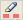
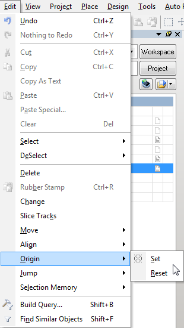
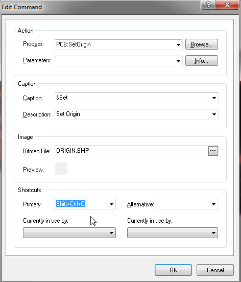

Система подсказок v.0.1.
Горячие клавиши, общие для Schematic и PCB Editor
| SHIFT | Увеличивает скорость автопрокрутки при панорамировании. |
| Y | При размещении объекта зеркально отображают его (flip) по оси Y. |
| X | При размещении объекта зеркально отображают его (flip) по оси X. |
| CTRL + SHIFT + клавиши со стрелками | Перемещают выбранный объект на 10 ячеек сетки в направлении нажатой клавиши со стрелкой. |
| SHIFT + клавиши со стрелками | Перемещение курсора на 10 ячеек сетки в направлении нажатой клавиши со стрелкой. |
| CTRL + клавиши со стрелками | Перемещают выбранный объект на 1 ячейку сетки в направлении нажатой клавиши со стрелкой. |
| клавиши со стрелками | Перемещение курсора на 1 ячейку сетки в направлении нажатой клавиши со стрелкой. |
| ESC | Выход из текущего активного процесса. |
| END | Перерисовка экрана. |
| HOME | Перерисовка экрана с центром в месте положения курсора. |
| CTRL + HOME | Переход к точке абсолютного отсчета (absolute origin, находится в левом нижнем углу рабочего пространства). |
| CTRL + Mouse-wheel down (или PAGE DOWN) | Отдаление. |
| CTRL + Mouse-wheel up (или PAGE UP) | Приближение относительно курсора. |
| Mouse-wheel | Панорамирование вверх / вниз. |
| SHIFT + Mouse-wheel | Панорамирование влево / вправо. |
| A | Отображение подменю Align. |
| B | Отображение подменю Toolbars. |
| J | Отображение подменю Display Jump. |
| K | Отображение подменю Workspace Panels. |
| M | Отображение подменю Move. |
| O | Отображение меню Options (контекстное меню, вызываемое правым кликом). |
| S | Отображение подменю Select. |
| X | Отображение подменю DeSelect. |
| Z | Всплывающее меню для команд зума. |
| CTRL + Z | Отмена (Undo). |
| CTRL + Y | Возврат изменений (Redo). |
| CTRL + A | Выбрать все. |
| CTRL + C (или CTRL + INSERT) | Копирование (Copy). |
| CTRL + X (или SHIFT + DELETE) | Вырезать (Cut). |
| CTRL + V (или SHIFT + INSERT) | Вставить (Paste). |
| CTRL + R | Копирование в буфер обмена и повторение команды вставки выбранных объектов (Rubber Stamp, резиновый штамп). |
| CTRL + R then ESC | Повторный вход в режим Rubber Stamp с текущим содержимым буфера обмена. |
| CTRL + Q | Доступ к диалогу Selection Memory (память выбранного). |
| ALT | Фиксация перемещения объекта горизонтально или вертикально. |
| DELETE | Удалить выбранное. |
| V, D | Просмотр документа. |
| V, F | Просмотр размещенных с подгонкой (fit placed) объектов. |
| X, A | Повторно выбрать все. |
| Right-click & hold | Отобразит инструмент "рука", чтобы смещать вид. |
| Left-click | Выбор / отмена выбора объекта под курсором. |
| Right-click | Отобразить контекстное меню, или выход из текущей операции. |
| Right-click на объекте, выбрать Find Similar | Загрузить объект под курсором в диалог Find Similar Objects (найти похожие объекты). |
| Left-click, hold & drag | Выбрать объекты в очерченной курсором зоне. |
| Left-click & hold | Переместить объект / выбранные объекты под курсором. |
| Left Double-click | Редактировать объект. |
| SHIFT + Left-click | Добавить / удалить объект в / из набора выбранных объектов. |
| TAB | Редактировать атрибуты во время размещения. |
| SHIFT + C | Очистка текущего фильтра (Filter). |
| SHIFT + F | Клик на объекте для отображения диалога Find Similar Objects (найти аналогичные объекты). |
| Y | Вызов всплывающего меню быстрых запросов (Quick Queries). |
| F11 | Переключение панели инспектора (Inspector) из состояния включено в состояние выключено и обратно. |
| F12 | Переключение панели фильтра (Filter) из состояния включено в состояние выключено и обратно. |
| SHIFT + F12 | Переключение панели List из состояния включено в состояние выключено и обратно. |
| ALT + F5 | Переключение из полноэкранного режима в оконный и обратно. |
 , Left-click , Left-click |
Cross probe - показать соответствующий объект в целевом документе, оставаясь на исходном документе. |
| , CTRL + Left-click |
Cross probe и переход на соответствующий объект на цели, с переключением на документ цели. |
| SHIFT + CTRL + T | Выравнивание выбранных объектов по верхним краям. |
| SHIFT + CTRL + L | Выравнивание выбранных объектов по левым краям. |
| SHIFT + CTRL + R | Выравнивание выбранных объектов по правым краям. |
| SHIFT + CTRL + B | Выравнивание выбранных объектов по нижним краям. |
| SHIFT + CTRL + H | Равномерно распределить выбранные объекты по горизонтали. |
| SHIFT + CTRL + V | Равномерно распределить выбранные объекты по вертикали. |
| SHIFT + CTRL + D | Выровнять выбранные объекты по решетке. |
| CTRL + n (n=1 to 8) | Сохранить текущий выбор в ячейку памяти n. |
| ALT + n (n=1 to 8) | Вспомнить выбор из ячейки памяти n. |
| SHIFT + n (n=1 to 8) | Добавить текущий выбор в уже сохраненное в ячейке n. |
| SHIFT + ALT + n (n=1 to 8) | Вспомнить выбранное из ячейки памяти n и добавить это к текущему выбранному. |
| SHIFT + CTRL + n (n=1 to 8) | Применить фильтрацию, основываясь на наборе выбранного в ячейке памяти n. |
Горячие клавиши только для Schematic Editor
| G | Переключение по циклу установленных привязок к решетке (snap grid). |
| F2 | Редактировать место размещения. |
| CTRL + PAGE DOWN | Вписать все видимые объекты в рабочее окно. |
| SPACEBAR | Поворот на 90o против часовой стрелки при перемещении объекта. |
| SPACEBAR | Переключение режима начало / конец при размещении проводника / шины / линии. |
| , SPACEBAR | Переключение цвета пера при использовании подсвеченных перьев. |
| SHIFT + SPACEBAR | Поворот на 90o по часовой стрелке при перемещении объекта. |
| SHIFT + SPACEBAR | Циклическое переключение по режимам размещения проводника при прокладке проводника, шины, линии. |
| CTRL + SPACEBAR | Поворот на 90o против часовой стрелки при перетаскивании объекта. |
| SHIFT + CTRL + SPACEBAR | Поворот на 90o по часовой стрелке при перетаскивании объекта. |
| , CTRL + Left-click on port or sheet entry | Подсветка соединения / цепи (connection / net) на целевом листе при использовании перьев подсветки. |
| SHIFT + CTRL + C | Очистка всех подсветок, которые были наложены подсвечивающими перьями. |
| BACKSPACE | Удалить последний угол, когда прокладывается проводник / шина / линия / полигон (wire / bus / line / polygon). |
| Left-click, hold + DELETE | Удаление угла, когда выбран проводник. |
| Left-click, hold + INSERT | Добавление угла, когда выбран проводник. |
| CTRL + Left-click & drag | Перетаскивание объекта. |
| Left-click панели Navigator | Cross probe к объекту на документе принципиальной схемы. |
| ALT + Left-click in Navigator panel | Cross probe к объекту и на документе принципиальной схемы, и PCB. |
| ALT + Left-click на объекте сети | Подсветка на листе всех элементов в цепи. |
| CTRL + двойной Left-click | Спуск вниз по иерархии символа на листе. |
| CTRL + Double Left-click | Подняться вверх по иерархии. |
| + (numeric keypad) | Увеличение размера символа IEEE при размещении или перемещении. |
| - (numeric keypad) | Уменьшение размера символа IEEE при размещении или перемещении. |
| CTRL + F | Найти текст. |
| CTRL + H | Найти и заменить текст. |
| F3 | Перейти к следующему найденному тексту. |
| INSERT | Копирование атрибутов объекта под курсором при размещении объектов такого же типа. |
| S | Переключение листа при перемещении одного или большего количества выбранных объектов листа. |
| V | Поменять порядок листов при перемещении двух или большего количества выбранных объектов листа. |
| T | Переключение типа IO объекта листа при перемещении одного или большего количества объектов листа. |
| T | Переключение типов всех объектов IO при изменении размера выбранного символа листа. |
| T, P | Доступ к странице Schematic - General диалога Preferences. |
Горячие клавиши только для PCB Editor
| SHIFT + R | Циклическое переключение по трем режимам трассировки (ignore, avoid или push obstacle). |
| SHIFT + E | Переключение электрической сетки (electrical grid) из состояния включено в выключено и обратно. |
| SHIFT + B | Построить запрос (Build Query). |
| SHIFT + PAGE UP | Приближение с малыми шагами. |
| SHIFT + PAGE DOWN | Отдаление с малыми шагами. |
| CTRL + PAGE UP | Приближение 400% |
| CTRL + PAGE DOWN | Вписать документ в рабочее окно. |
| CTRL + END | Перейти к заданной точке относительного отсчета (relative origin) в рабочей области. |
| ALT + END | Перерисовать только текущий слой. |
| ALT + INSERT | Вставить на текущий слой. |
| CTRL + G | Отобразить всплывающий диалог Snap Grid. |
| G | Отобразить всплывающее меню Snap Grid. |
| N | Скрыть отображение направления цепей (ratsnest) при перемещении компонента. |
| L | При перемещении переставить компонент на противоположную сторону платы. |
| SHIFT + F1 | При нажатии во время разводки, отобразит соответствующие горячие клавиши, используемые в разводке. |
| TAB | При нажатии во время разводки, отобразит соответствующий диалог редактирования настройки длины, размещения компонента или строки. |
| F2 | Отобразит настройку опций Board Insight и Heads Up. |
| CTRL + Left-click | Подсветка разведенной сети под курсором (для очистки повторите нажатие на свободной области). |
| CTRL + SPACEBAR | Переключение по циклу режимов соединения линий при интерактивной разводке. |
| BACKSPACE | Удалить последний угол трека при интерактивной разводке. |
| SHIFT + S | Включить / выключить режим одного слоя (single layer mode), или циклическое переключение по настройкам режимов Single Layer Modes в свойствах PCB Preferences: Board Insight Display. |
| O, D, D, O, ENTER | Переключение отображения всех примитивов в грубом форме (draft mode). |
| O, D, F, O, ENTER | Установить отображение всех примитивов в нормальном режиме (final mode). |
| O, D (or CTRL + D) | Доступ к странице Show/Hide диалога View Configurations. |
| L | Доступ к странице Board Layers And Colors диалога View Configurations. |
| CTRL + H | Выбор подключенной меди. |
| CTRL + SHIFT + Left-click & hold | Разбить трек. |
| SHIFT + CTRL + Left-click | Подсветка дополнительных разведенных цепей под курсором. |
| + (numeric keypad) | Следующий слой. |
| - (numeric keypad) | Предыдущий слой. |
| CTRL + Click | Подсветка содержимого слоя на закладках слоя. |
| CTRL + SHIFT + Click | Увеличение подсветки на закладках слоя. |
| CTRL + ALT + Mouse | Подсветка содержимого под наведенным курсором, если наводить на объекты рабочей области или перемещать курсор по закладкам слоев. |
| * (numeric keypad) | Следующий слой разводки. |
| M | Отобразить подменю Move (перемещение). |
| ALT | Удерживайте для временного переключения из режима avoid-obstacle в режим ignore-obstacle. |
| CTRL | Удерживайте при разводке, чтобы временно запретить электрическую решетку. |
| CTRL + M | Измерение расстояний. |
| SPACEBAR (in interactive process) | Повернуть объект против часовой стрелки (задайте шаг поворота на странице PCB Editor - General диалога Preferences). |
| SPACEBAR (during interactive routing) | Переключиться между режимами начало / конец. |
| SHIFT + SPACEBAR (in interactive process) | Поверните перемещаемый объект по часовой стрелке. |
| SHIFT + SPACEBAR (during interactive routing) | При интерактивной трассировке переключайтесь между режимами угла. |
| [ | Уменьшить уровень маски для основного фильтра (permanent filter). |
| ] | Увеличить уровень маски для основного фильтра (permanent filter). |
| ALT < | Просмотр предыдущего компонента для активного документа библиотеки. |
| ALT > | Просмотр следующего компонента для активного документа библиотеки. |
| Q | Переключить единицы измерения (metric/imperial). |
| Ctrl + Q | Переключить единицы (metric/imperial) в диалоге открытия PCB Editor. |
| T, B | Доступ к диалогу 3D Body Manager. |
| T, P | Доступ к диалогу Preferences. |
| BACKSPACE | Удаление последнего сегмента с интерактивно настроенной длиной. |
| SPACEBAR | Следующий шаблон волны интерактивной подстройки длины. |
| SHIFT + SPACEBAR | Предыдущий шаблон волны интерактивной подстройки длины. |
| SHIFT + R | Переключение режима разводки. |
| , (comma) | Уменьшение на один шаг амплитуды шаблона интерактивной подстройки длины. |
| . (full stop / period) | Увеличение на один шаг амплитуды шаблона интерактивной подстройки длины. |
| 1 | Уменьшение интерактивной подстройки длины скоса или радиуса. |
| 2 | Увеличение интерактивной подстройки длины скоса или радиуса. |
| 3 | Уменьшение интерактивной подстройки длины шаблона интервала на один шаг. |
| 4 | Увеличение интерактивной подстройки длины шаблона интервала на один шаг. |
| Y | Переключение направления интерактивной подстройки амплитуды. |
Горячие клавиши, используемые в интерактивной разводке
| Shift+F1 (or ~ (tilde)) | Отображение списка горячих клавиш. |
| CTRL + Click |
Автозавершение сегментов до цели. |
| BACKSPACE | Удалить последний сегмент. |
| ESC | Прервать текущую трассировку. |
| SHIFT + A |
Добавить соответствующие секции (интерактивная настройка длины). |
| SHIFT + C |
Переключение автозавершения. |
| SHIFT + G |
Toggle length tuning gauge |
| SHIFT + O |
Переключение видимой области разводки. |
| SHIFT + P |
Переключение режима Push (проталкивание). |
| SHIFT + Q |
Переключение glossing. |
| SHIFT + R |
Переключение режима разводки. |
| SHIFT + S |
Переключить слой для текущей трассы. |
| SHIFT + V |
Выбрать желаемый размер переходного отверстия (via). |
| SHIFT + W |
Открыть диалог Choose Favorite Width (выбор желаемой ширины). |
| , (comma) | Уменьшить arc setback. |
| SHIFT + . (comma) |
Уменьшить arc setback 10x. |
| . (full stop / period) | Увеличить arc setback. |
| SHIFT + . (full stop / period) |
Увеличить arc setback 10x. |
| ENTER | Разместить сегмент. |
| + (plus) | Следующий слой (цифровая клавиатура). |
| - (minus) | Предыдущий слой (цифровая клавиатура). |
| * (multiply) | Следующий сигнальный слой (цифровая клавиатура). |
| SPACEBAR | Переключаться по направлениям угла. |
| SHIFT + SPACEBAR |
Переключаться по стилям угла (если не включено ограничение 90/45°). |
| TAB | Редактирование свойств трассы. |
| 1 | Переключение режима Look-ahead – между размещением 1 и 2 сегментов. |
| 2 | Добавить переходное отверстие via без изменения слоя. |
| SHIFT + 2 |
Добавить fanout via, инструмент tool сразу ожидает следующий fanout для разводки и via для размещения. |
| 3 | Переключение исходной ширины трека. |
| 4 | Переключение исходного размера переходного отверстия. |
| 6 | Включить walk-around (с нажатой клавишей). |
| 7 | Switch leader trace or switch routing target in single trace mode |
| 8 | Переключить режим динамической трассировки. |
| 9 | Переключиться в противоположную точку трассировки. |
Горячие клавиши для прокладки дифференциальной пары проводников (Differential Pair Routing)
| Shift+F1 (or ~ (tilde)) | Отобразить список горячих клавиш. |
| CTRL + Click |
Подтвердить автозавершение сегментов (если это применимо). |
| BACKSPACE | Удалить последний сегмент. |
| SHIFT + BACKSPACE |
Удалить последний кластер сегментов. |
| ESC | Прервать текущую трассировку. |
| SHIFT + R |
Переключить режим трассировки. |
| SHIFT + W |
Открыть диалог Choose Favorite Width (выбор желаемой ширины). |
| ENTER | Разместить сегмент. |
| + (plus) | Следующий слой. |
| - (minus) | Предыдущий слой. |
| * (multiply) | Следующий сигнальный слой. |
| SPACEBAR | Переключить направление угла. |
| SHIFT + SPACEBAR |
Переключить стили угла (если не включено ограничение 90/45°). |
| TAB | Редактировать свойства трассы. |
| 3 | Циклически переключиться по исходной ширине трека. |
| 4 | Циклически переключиться по исходному размеру переходного отверстия. |
| 5 | Переключить автозавершение. |
| 6 | Поменять режим переходного отверстия. |
Горячие клавиши интерактивной настройки длины (Interactive Length Tuning)
| Shift+F1 (or ~ (tilde)) | Отобразить список горячих клавиш. |
| TAB | Редактирование настроек паттерна. |
| BACKSPACE | Удалить последний сегмент. |
| SPACEBAR | Следующий паттерн настройки. |
| SHIFT + SPACEBAR |
Предыдущий паттерн настройки. |
| SHIFT + R |
Переключение режима разводки. |
| , (comma) | Уменьшить амплитуду паттерна на шаг. |
| . (full stop / period) | Увеличить амплитуду паттерна на шаг. |
| 1 | Уменьшить скос (miter) или радиус. |
| 2 | Увеличить скос (miter) или радиус. |
| 3 | Уменьшить зазор паттерна на шаг. |
| 4 | Увеличить зазор паттерна на шаг. |
| Y | Переключить направление амплитуды. |
Горячие клавиши просмотра устройств (Devices View)
| F5 | Обновить все. |
| ESC | Приостановить текущий процесс (HALT Process Flow). |
| CTRL + F9 | Скомпилировать битовый файл (Bit File). |
| CTRL + F10 | Сделать ребилд битового файла. |
| F12 | Жесткий сброс устройства (Reset Hard Device). |
| F9 | Скомпилировать и загрузить битовый файл. |
| F10 | Сделать ребилд битового файла и загрузить его. |
| F11 | Загрузить битовый файл. |
| SHIFT + CTRL + F9 | Скомпилировать все битовые файлы. |
| SHIFT + CTRL + F10 | Сделать ребилд всех битовых файлов. |
| SHIFT + F12 | Сброс всех устройств. |
| SHIFT + F9 | Скомпилировать и загрузить все битовые файлы. |
| SHIFT + F10 | Сделать ребилд и загрузку всех битовых файлов. |
| SHIFT + F11 | Загрузить все битовые файлы. |
| ALT + T, P | Доступ к странице FPGA - Devices View диалога Preferences. |
Горячие клавиши 3D визуализации
| 0 | Поворачивает вид 3D так, что перспектива камеры становится перпендикулярно к печатной плате, и плата повернется так, чтобы горизонтальная плоскость (ось X) так, лежала в направлении нижней кромки окна редактирования (поворот на 0°). |
| 9 | Поворачивает вид 3D так, что перспектива камеры становится перпендикулярно к печатной плате, и плата повернется так, чтобы горизонтальная плоскость (ось X) так, лежала в направлении правой кромки окна редактирования (поворот на 90°). |
| 2 | Переключение от вида 3D к виду 2D, используя последнюю конфигурацию вида 2D. |
| 3 | Переключение от вида 2D к виду 3D, используя последнюю конфигурацию вида 3D. |
| SHIFT | Включает сферу поворота 3D (сделайте левый клик и перетаскивайте элементы сферы, чтобы повернуть модель). |
| V, F | Вписывает всю плату в окно. |
| V, B | Вписывает плату в окно по горизонтали относительно позиции курсора. |
| Mouse-wheel | Смещение панорамы вверх / вниз. |
| SHIFT + Mouse-wheel | Смещение панорамы влево / вправо. |
| CTRL + Mouse-wheel | Зум (приближение / отдаление) с инкрементным шагом. |
| CTRL + Right drag | Плавный зум (приближение / отдаление). |
| CTRL + C | Создать растровую картинку (.bmp) из текущего вида 3D. |
| PAGE UP / PAGE DOWN | Зум (приближение / отдаление) с инкрементным шагом. |
| T, P | Доступ к странице PCB Editor - Display диалога Preferences. |
| L | Доступ к странице Physical Materials (3D) диалога View Configurations. |
Горячие клавиши 3D Body Placement (размещение трехмерного тела)
| + (plus) | Следующий слой. |
| - (minus) | Предыдущий слой. |
| L | Переместить тело 3D на парный механический слой. |
| X | Зеркально отобразить (flip) тело 3D по оси X. |
| Y | Зеркально отобразить (flip) тело 3D по оси Y. |
| SPACEBAR | Повернуть тело 3D против часовой стрелки. |
| SHIFT + SPACEBAR | Повернуть тело 3D по часовой стрелке. |
| 2 | Повернуть тело 3D против часовой стрелки по оси X. |
| 3 | Уменьшить высоту тела 3D (ось Z-axis) на одну ячейку привязки сетки. |
| 4 | Повернуть тело 3D против часовой стрелки по оси Y. |
| 6 | Повернуть тело 3D по часовой стрелке по оси Y. |
| 8 | Повернуть тело 3D по часовой стрелке по оси X. |
| 9 | Уменьшить высоту тела 3D (ось Z-axis) на одну ячейку привязки сетки. |
| ¬ (left arrow) | Переместить тело 3D влево по оси X на одну ячейку привязки сетки. |
| SHIFT + ¬ (left arrow) | Переместить тело 3D влево по оси X на 10 ячеек привязки сетки. |
| ® (right arrow) | Переместить тело 3D вправо по оси X на одну ячейку привязки сетки. |
| SHIFT + ® (right arrow) | Переместить тело 3D вправо по оси X на 10 ячеек привязки сетки. |
| (up arrow) | Переместить тело 3D назад по оси Y на одну ячейку привязки сетки. |
| SHIFT + (up arrow) | Переместить тело 3D назад по оси Y на 10 ячеек привязки сетки. |
| ? (down arrow) | Переместить тело 3D вперед по оси Y на одну ячейку привязки сетки. |
| SHIFT + ? (down arrow) | Переместить тело 3D вперед по оси Y на 10 ячеек привязки сетки. |
Горячие клавиши редактора PCB3D (Legacy 3D)
| PAGE UP | Зум на приближение. |
| PAGE DOWN | Зум на отдаление. |
| ALT + B | Вписать плату в рабочее окно. |
| ^ v < > | Панорамирование в направлении клавиш со стрелками. |
| INSERT | Панорамирование на приближение. |
| DELETE | Панорамирование на отдаление. |
| T, E | Доступ к диалогу Export для формата IGES/STEP |
| T, P | Доступ к странице PCB Editor - PCB Legacy 3D диалога Preferences. |
[Горячие клавиши редактора библиотеки PCB3D]
| PAGE UP | Зум на приближение. |
| PAGE DOWN | Зум на отдаление. |
| ALT + M | Вписать модель в рабочее окно. |
| ^ v < > | Панорамирование в направлении клавиш со стрелками. |
| INSERT | Панорамирование на приближение. |
| DELETE | Панорамирование на отдаление. |
| F2 | Переименовать модель. |
| SHIFT + DELETE | Режим удаления (Delete mode). |
| CTRL + T | Установка поворота и трансляции. |
| T, I | Импорт 3D-модели. |
| T, E | Экспорт модели в формат IGES. |
| T, P | Доступ к диалогу Preferences. |
Горячие клавиши редактора вывода Output Job
| CTRL + X (or SHIFT + DELETE) | Вырезать (Cut). |
| CTRL + C (or CTRL + INSERT) | Копировать (Copy). |
| CTRL + V (or SHIFT + INSERT) | Вставить (Paste). |
| CTRL + D | Сделать дубликат. |
| DELETE | Очистить. |
| ALT + ENTER | Конфигурировать. |
| CTRL + F9 | Запуск сфокусированного выходного генератора (Focused Output Generator). |
| SHIFT + CTRL + F9 | Запуск выбранных выходных генераторов. |
| F9 | Запуск выходных генераторов, которые разрешены для пакетного режима (Batch-enabled Output Generators). |
| SHIFT + CTRL + O | Доступ к диалогу Output Job Options. |
Горячие клавиши CAM Editor (CAMtastic®)
| CTRL + Z (or ALT + BACKSPACE) | Отменить (Undo). |
| CTRL + Y (or CTRL + BACKSPACE) | Вернуть изменения (Redo). |
| CTRL + X | Вырезать (Cut). |
| CTRL + C (or CTRL + INSERT) | Копировать (Copy). |
| CTRL + V (or SHIFT + INSERT) | Вставить (Paste). |
| CTRL + E | Очистить. |
| CTRL + M | Зеркально отобразить. |
| CTRL + R | Повернуть. |
| CTRL + L | Селективно выровнять. |
| L | Объединить слои (Merge Layers). |
| ALT + C | Выбрать с помощью отрисованного поверх окна (crossing window). |
| ALT + P | Выбрать то, что было выбрано ранее. |
| CTRL + F | Включить / выключить режим выбора Flash. |
| CTRL + T | Включить / выключить режим выбора Trace. |
| CTRL + A | Массив объектов. |
| CTRL + D | Модифицировать / изменить объекты. |
| CTRL + I | Установить точку отсчета (origin). |
| CTRL + U | Масштабировать объекты. |
| HOME | Просмотреть все. |
| SHIFT + P | Просмотр вокруг указанной точки. |
| CTRL + Mouse-wheel up (or PAGE UP) | Зум на приближение. |
| CTRL + Mouse-wheel down (or PAGE DOWN) | Зум на отдаление. |
| Mouse-wheel up | Панорамировать вверх. |
| Mouse-wheel down | Панорамировать вниз. |
| SHIFT + Mouse-wheel up | Панорамировать влево. |
| SHIFT + Mouse-wheel down | Панорамировать вправо. |
| SHIFT + V | Зум последнего. |
| END | Обновить. |
| D | Режим динамического панорамирования. |
| SHIFT + B | Показать Film Box. |
| CTRL + HOME | Зум для Film Box |
| ALT + HOME | Зум текущего DCode. |
| SHIFT + E | Включить / выключить вид Extents Box. |
| SHIFT + F | Включить / выключить режим заполнения. |
| SHIFT + H | Переключить подсветку текущих объектов с использованием текущего D code. |
| N | Переключить режим просмотра в негативе. |
| SHIFT + T | Переключить режим просмотра с прозрачностью. |
| SHIFT + G | Доступ к странице CAM Editor - Drawing Modes диалога Preferences. |
| Q | Запросить объект. |
| SHIFT + N | Запросить цепь (net). |
| SHIFT + M | Измерить расстояние точка-точка. |
| SHIFT + A | Доступ к таблице апертур. |
| K | Доступ к диалогу выключения слоев (Set Layers Off). |
| ALT + K | Доступ к диалогу включения слоев (Set Layers On). |
| SHIFT + S | Переключить режим привязки к объекту. |
| ESC | Отмена действия. |
| SHIFT + CTRL + R | Повторить последнее действие. |
| + (numeric keypad) | Отобразить только следующий слой. |
| - (numeric keypad) | Отобразить только предыдущий слой. |
| * (numeric keypad) | Отобразить только следующий медный (signal/plane) слой. |
Горячие клавиши редактора цифровых сигналов (Digital Waveform Editor Shortcuts)
| PAGE UP | Зум на приближение около активного курсора времени. |
| PAGE DOWN | Зум на отдаление около активного курсора времени. |
| CTRL + PAGE DOWN | Вписать документ в рабочее окно. |
| CTRL + A | Выбрать все сигналы (waveforms). |
| CTRL + C (or CTRL + INSERT) | Копировать сигнал (waveform). |
| CTRL + X (or SHIFT + DELETE) | Вырезать сигнал. |
| CTRL + V (or SHIFT + INSERT) | Вставить сигнал. |
| Left-click & drag | Переразместить сигнал, на котором стоит фокус. |
| J | Отобразить подменю перехода (Jump). |
| SHIFT + CTRL + F | Переход на первое изменение сигнала, на котором стоит фокус. |
| SHIFT + CTRL + N | Переход на следующее изменение сигнала, на котором стоит фокус. |
| SHIFT + CTRL + P | Переход на предыдущее изменение сигнала, на котором стоит фокус. |
| SHIFT + CTRL + L | Переход на последнее изменение сигнала, на котором стоит фокус. |
| T, P | Доступ к диалогу Preferences. |
Горячие клавиши редактора SimData
| CTRL + X (or SHIFT + DELETE) | Вырезать (Cut). |
| CTRL + C | Копировать (Copy). |
| CTRL + V (or SHIFT + INSERT) | Вставить (Paste). |
| DELETE | Очистить. |
| + (numeric keypad) | Следующий чарт. |
| - (numeric keypad) | Предыдущий чарт. |
| PAGE UP | Зум на приближение. |
| PAGE DOWN | Зум на отдаление. |
| CTRL + PAGE DOWN | Вписать документ в рабочее окно. |
| END | Обновить. |
| ESC (or SHIFT + C) | Очистить фильтр. |
| ^ v | Прокрутка чарта, один сигнал за один раз, в направлении клавиш со стрелками. |
| SHIFT + ^ | Прокрутка чарта вверх, один сигнал за один раз. |
| CTRL + ^ (or CTRL + HOME) | Переход наверх чарта. |
| SHIFT + v | Прокрутка чарта вниз, один сигнал за один раз. |
| CTRL + v (or CTRL + END) | Переход вниз чарта. |
| < > | Прокрутка чарта по горизонтали в сторону направления клавиш со стрелками, на одно главное деление оси X. |
| SHIFT + < | Прокрутка чарта влево на одну страницу. |
| CTRL + < | Переход на начало оси X. |
| SHIFT + > | Прокрутка чарта вправо на одну страницу. |
| CTRL + > | Переход на конец оси X. |
Горячие клавиши, общие для всех текстовых редакторов
| CTRL + Z | Отмена (Undo). |
| CTRL + X (or SHIFT + DELETE) | Вырезать (Cut). |
| CTRL + C (or CTRL + INSERT) | Копировать (Copy). |
| CTRL + V (or SHIFT + INSERT) | Вставить (Paste). |
| ENTER | Вставить возврат каретки. |
| CTRL + N | Вставить новую строку. |
| TAB | Вставить табуляцию. |
| SHIFT + TAB | Переход обратно на позицию табуляции. |
| INSERT | Переключить режим вставки текста между Insert (добавление) и Overwrite (перезапись). |
| SHIFT + CTRL + C | Очистить маски фильтра. |
| CTRL + F | Найти текст. |
| CTRL + H (or CTRL + R) | Найти и заменить текст. |
| F3 (or CTRL + L) | Перейти к следующему найденному месту. |
| SHIFT + CTRL + F | Перейти к следующему найденному месту в выделенном тексте. |
| CTRL + A | Выбрать все. |
| PAGE UP | Прокрутка на страницу вверх. |
| PAGE DOWN | Прокрутка на страницу вниз. |
| CTRL + ^ | Прокрутка на одну строку вверх. |
| CTRL + v | Прокрутка на одну строку вниз. |
| CTRL + PAGE UP | Переместить курсор наверх в окне. |
| CTRL + PAGE DOWN | Переместить курсор вниз на окне. |
| HOME | Переместить курсор на начало текущей строки. |
| END | Переместить курсор в конец текущей строки. |
| CTRL + HOME | Переместить курсор на начало файла. |
| CTRL + END | Переместить курсор в конец файла. |
| ^ v | Переместить курсор на одну строку в направлении клавиш со стрелками. |
| < > | Переместить курсор на один символ в направлении клавиш со стрелками. |
| CTRL + < | Переместить курсор на одно слово влево. |
| CTRL + > | Переместить курсор на одно слово вправо. |
| SHIFT + CTRL + HOME | Расширить выбранный диапазон текста до начала файла. |
| SHIFT + CTRL + END | Расширить выбранный диапазон текста до конца файла. |
| SHIFT + PAGE UP | Расширить выбранный диапазон текста на одну страницу вверх. |
| SHIFT + PAGE DOWN | Расширить выбранный диапазон текста на одну страницу вниз. |
| SHIFT + CTRL + PAGE UP | Расширить выбранный диапазон текста до верхней границы окна. |
| SHIFT + CTRL + PAGE DOWN | Расширить выбранный диапазон текста до нижней границы окна. |
| SHIFT + HOME | Расширить выбранный диапазон текста до начала текущей строки. |
| SHIFT + END | Расширить выбранный диапазон текста до конца текущей строки. |
| SHIFT + < | Расширить выбранный диапазон текста на один символ влево. |
| SHIFT + > | Расширить выбранный диапазон текста на один символ вправо. |
| SHIFT + ^ | Расширить выбранный диапазон текста на тот же столбец в предыдущей строке. |
| SHIFT + v | Расширить выбранный диапазон текста на тот же столбец в следующей строке. |
| SHIFT + CTRL + < | Расширить выбранный диапазон текста на одно слово влево. |
| SHIFT + CTRL + > | Расширить выбранный диапазон текста на одно слово вправо. |
| ALT + SHIFT + CTRL + HOME | Расширить выбранный столбец текста до начала файла. |
| ALT + SHIFT + CTRL + END | Расширить выбранный столбец текста до конца файла. |
| ALT + SHIFT + PAGE UP | Расширить выбранный столбец текста на страницу вверх. |
| ALT + SHIFT + PAGE DOWN | Расширить выбранный столбец текста на страницу вниз. |
| ALT + SHIFT + CTRL + PAGE UP | Расширить выбранный столбец текста до верхней границы окна. |
| ALT + SHIFT + CTRL + PAGE DOWN | Расширить выбранный столбец текста до нижней границы окна. |
| ALT + SHIFT + HOME | Расширить выбранный столбец текста до начала текущей строки. |
| ALT + SHIFT + END | Расширить выбранный столбец текста до конца текущей строки. |
| ALT + SHIFT + < | Расширить выбранный столбец текста влево на один столбец. |
| ALT + SHIFT + > | Расширить выбранный столбец текста вправо на один столбец. |
| ALT + SHIFT + ^ | Расширить выбранный столбец текста вверх на оду строку. |
| ALT + SHIFT + v | Расширить выбранный столбец текста вниз на оду строку. |
| ALT + SHIFT + CTRL + < | Расширить выбранный столбец текста на одно слово влево. |
| ALT + SHIFT + CTRL + > | Расширить выбранный столбец текста на одно слово вправо. |
| ALT + Left-click & drag | Выбрать столбец текста с помощью мыши. |
| DELETE | Удалить символ справа от позиции курсора. |
| BACKSPACE | Удалить символ слева от позиции курсора. |
| CTRL + BACKSPACE | Удалить текст до начала предыдущего слова. |
| CTRL + T | Удалить текст до начала следующего слова. |
| CTRL + Y | Вернуть изменения (Redo), т. е. восстановить изменения, которые были отменены Undo. |
| CTRL + Q + Y | Удалить текст до конца текущей строки. |
| ALT + T, P | Доступ к странице Text Editors - General диалога Preferences. |
Горячие клавиши редактора Embedded Software (.c, .asm)
| F9 | Запуск отлаживаемой программы. |
| CTRL + F9 | Запуск до курсора. |
| F5 | Переключить положение точки останова на текущей строке. |
| Left-click in gutter | Переключить точку останова на строке. |
| CTRL + F5 | Добавить переменную в окно Watch. |
| F7 | Шаг в процедуру (Step into) на текущей строке исходного файла. |
| CTRL + F7 | Вычислить (Evaluate). |
| F8 | Шаг на следующую строку исходного текста. |
| SHIFT + F7 | Шаг в (Step into) текущую инструкцию. |
| SHIFT + F8 | Шаг на следующую инструкцию. |
| CTRL + F2 | Сброс текущей сессии отладки. |
| CTRL + F3 | Завершить текущую сессию отладки. |
| Left-click on code outline +/- | expand/contract сегмента кода. |
| CTRL + Double Left-click on code outline +/- | expand/contract всех сегментов кода. |
| CTRL + Left-click on variable/ function/ procedure name | Переставить текстовый курсора на точку соответствующей декларации. |
Горячие клавиши VHDL Editor
| CTRL + F9 | Скомпилировать исходный код документов HDL. |
| F9 | Запуск навсегда (Run Forever). |
| CTRL + F5 | Запуск симуляции для последнего шага времени. |
| CTRL + F8 | Запуск симуляции на указанное время. |
| CTRL + F11 | Запуск симуляции до следующей точки отладки. |
| CTRL + F7 | Запуск симуляции для шага времени. |
| F6 | Запуск симуляции для шага Delta. |
| F7 | Запуск симуляции с заходом в процедуры / функции. |
| F8 | Запуск симуляции без захода в процедуры / функции. |
| CTRL + F2 | Сброс текущей сессии симуляции. |
| CTRL + F3 | Завершение текущей сессии симуляции. |
| Left-click in gutter | Переключить положение точки останова на текущей строке. |
| Left-click on code outline +/- | expand/contract сегмент кода. |
| CTRL + Left-click on code outline +/- | expand/contract всех сегментов кода. |
Горячие клавиши Scripting Editor (.pas, .vbs, .js, .tcl, .bas)
| F9 | Запуск скрипта. |
| CTRL + F9 | Запуск до курсора. |
| F5 | Переключить положение точки останова на текущей строке. |
| Left-click in gutter | Переключить положение точки останова на строке. |
| CTRL + F7 | Вычислить. |
| F7 | Шаг в процедуру (Step into) на текущей строке исходного кода. |
| F8 | Шаг на следующую строку исходного кода. |
| CTRL + F3 | Остановить выполнение скрипта. |
| CTRL + Left-click на переменной / имени функции или процедуры |
Переместить текстовый курсор на точку, соответствующую декларации. |
Простой способ добавления горячих клавиш для команд меню
|
В примере, показанном ниже, будет создана горячая комбинация клавиш (shortcut) для установки положения точки отсчета (origin) в редакторе печатной платы PCB editor. Откройте соответствующий пункт меню, как показано на картинке, и при удерживании клавиши CTRL сделайте клик на пункте меню Origin -> Set.  Отобразится окно диалога редактирования команд (Edit Command). Теперь можно назначить этой команде любую нужную горячую комбинацию клавиш. Ниже показано, что на этот пункт меню назначен Primary Shortcut (главная комбинация горячих клавиш) в CTRL+Shift+O.  |
[About]
[Содержание]